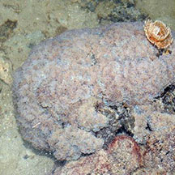
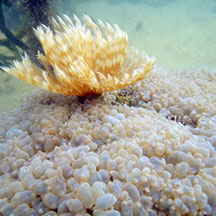
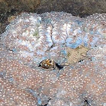

|
|
| hard corals text index | photo index |
| Phylum Cnidaria > Class Anthozoa > Subclass Zoantharia/Hexacorallia > Order Scleractinia |
| Pearl bubble coral Physogyra lichtensteini* Scleractinia incertae sedis (Family) updated Jun 2025 Where seen? This hard coral covered in bubbles is sometimes seen on the intertidal shores in southern Singapore. Elsewhere, they are found in reefs protected from strong waves, especially in murky water. It was previously placed in Family Euphyllidae but now placed in "Scleractinia incertae sedis (Family)" which means a taxonomic group where its broader relationships are unknown or undefined. Features: Colony boulder-shaped, those seen 15-20cm. May also form thick plates. Corallites brain-like meandering short, widely separated valleys, made up of large coin-like disks. This hard coral is unique in having large bubbles that obscure the skeleton. When fully inflated, the bubbles are translucent, sometimes with pale stripes and resemble grapes in shape and size (1-2cm). When not fully inflated, the bubbles may be less translucent and have one or two white tips. The bubbles are modified tentacles that inflate during the day. These bubbles contain symbiotic algae (zooxanthellae) and the expanded surface area probably helps increase photosynthesis activity. The bubbles can sting humans, so don't touch the coral. These bubbles can retract into the skeleton when disturbed, but slowly. At night, the bubbles deflate and the long tapered conical finger-like feeding tentacles of the polyp emerge. Colours include beige. The corallites of Physogyra and some Plerogyra species form large brain-like meandering valleys (flabello-mendroid) while those of Plerogyra species may also be made up of long, tubular corallites (phaceloid) Sometimes confused with Euphyllia species. Here's more on how to tell apart the Euphyllia species. Status and threats: This coral is not listed amont the threatened animals of Singapore. But it is listed globally Near Threatened by the IUCN. Although it is widespread and common throughout its range, it is heavily harvested for the aquarium trade and has suffered extensive reduction of coral reef habitat due to a combination of threats. |
 Terumbu Bemban, Apr 11 |
 Brain-like meandering valleys, made up of large coin-like plates |
 During the day covered in bubbles. |
 |
 |
*Species are difficult to positively identify without close examination.
On this website, they are grouped by external features for convenience of display.
| Pearl bubble corals on Singapore shores |
On wildsingapore
flickr
|
| Other sightings on Singapore shores |
 Pulau Hantu, Jun 11 |
 |
 |

|
Links
References
|